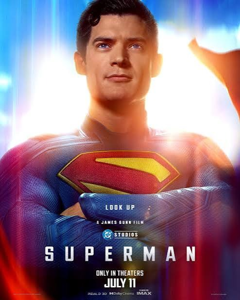
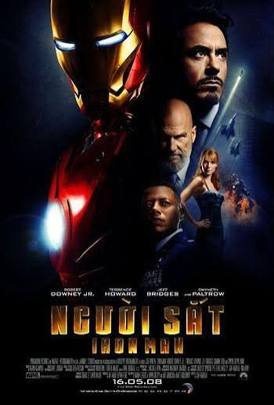
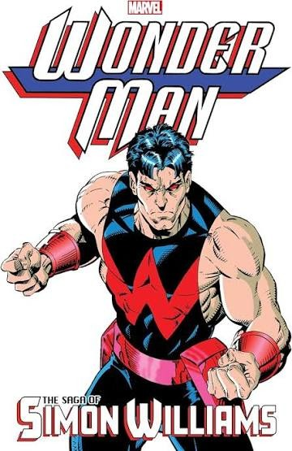
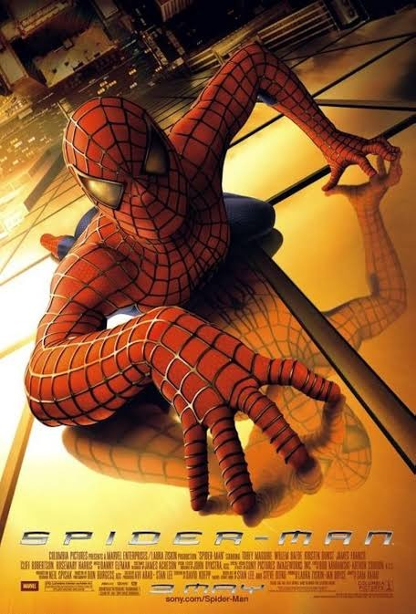

4 Bộ Phim Tôi Yêu Thích Nhất
Dưới đây là những bộ phim đặc biệt với tôi, mỗi bộ phim mang lại những cảm xúc và bài học khác nhau.

Superman (2025)
Bộ phim siêu anh hùng của đạo diễn James Gunn, tái khởi động vũ trụ DC. Superman là biểu tượng của hy vọng và lòng dũng cảm, chiến đấu bảo vệ Trái Đất trước những thế lực tối tăm.

Người Sắt - Iron Man (2008)
Bộ phim mở đầu cho Vũ trụ Điện ảnh Marvel (MCU). Tony Stark — thiên tài tỷ phú — chế tạo bộ giáp sắt mạnh mẽ và trở thành siêu anh hùng Iron Man để bảo vệ thế giới.

Wonder Man: The Saga of Simon Williams
Câu chuyện về Simon Williams — Wonder Man — một trong những siêu anh hùng mạnh mẽ nhất của Marvel. Từ kẻ phản diện trở thành Avenger, hành trình chuộc lỗi đầy cảm xúc.

Spider-Man (2002)
Bộ phim kinh điển của đạo diễn Sam Raimi về chàng trai Peter Parker bị nhện phóng xạ cắn và trở thành Người Nhện. Câu chuyện về trách nhiệm: "Quyền năng lớn đi kèm trách nhiệm lớn".